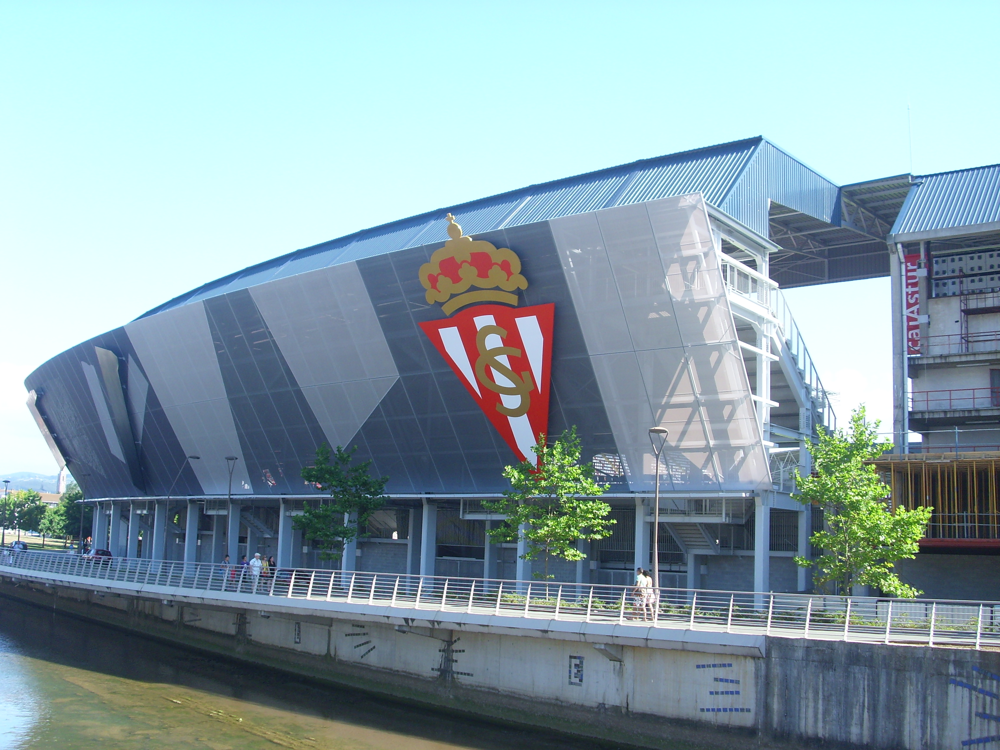

Nos encontramos en Avenida de El Piles, s/n, 33203 Gijón, Asturias. El acceso principal para socios y aficionados está señalizado junto a la puerta de taquillas.
El campo es fácilmente accesible en autobús urbano o dando un paseo desde el centro de la ciudad.
| Dias de partido | |
|---|---|
| Apertura | 2 horas antes del inicio |
| Cierre | Al comienzo de la segunda parte |